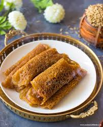

🍰 Pati Shapta

Ingredients
- For the filling:
- 1 cup khoya (mawa)
- 1/2 cup grated coconut
- 1/4 cup sugar
- 1/4 tsp cardamom powder
- 2 tbsp ghee (clarified butter)
- 1/4 cup chopped cashews and pistachios
- For the outer layer:
- 1 cup all-purpose flour (maida)
- 2 tbsp ghee
- 1/4 tsp salt
- Water (as required)
- Oil for frying
Instructions
- For the filling, heat ghee in a pan and add khoya. Stir-fry until it turns golden.
- Add grated coconut, sugar, and cardamom powder. Mix well and cook until the mixture thickens and begins to leave the sides of the pan.
- Remove from heat and let the mixture cool. Add chopped cashews and pistachios.
- For the dough, mix all-purpose flour, ghee, and salt in a bowl. Gradually add water to make a smooth dough. Cover and let it rest for 15 minutes.
- Divide the dough into small balls and roll them out into thin rounds.
- Place a spoonful of the filling in the center of each round. Fold the edges over the filling to form a half-moon shape, sealing the edges with water.
- Heat oil in a pan and deep-fry the patties until they are golden brown and crispy.
Serve With
- Enjoy Pati Shapta as a sweet snack or dessert on its own!
💡 Tip: Pati Shapta tastes best when served warm or at room temperature.